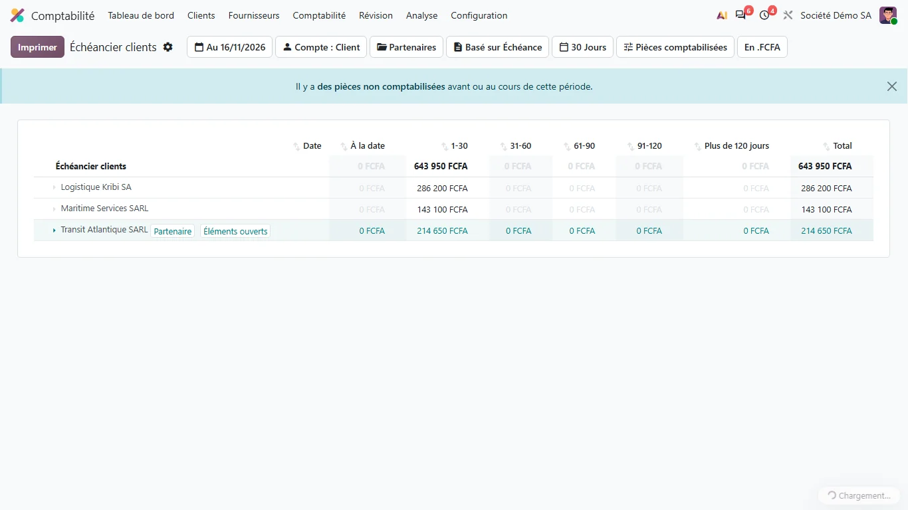

Extraire et revoir la balance âgée des clients
Objectif. Suivre les créances clients par ancienneté et relancer.
Menu Odoo 15Comptabilité > Rapports > Balance âgée clients (« Échéancier clients » dans les versions récentes)
Étapes
- Ouvrez le rapport à la date voulue.
- Lisez les colonnes par ancienneté : à échoir, 1-30, 31-60, 61-90, 91-120, plus de 120 jours.
- Cliquez sur un client pour voir ses factures ouvertes.
- Relancez les retards et signalez les créances douteuses.

À vérifier
- Le total égale le solde des comptes clients de la balance générale.
À éviter
- Ne laissez pas des paiements non lettrés : ils faussent l'ancienneté.
Exercice
Éditez la balance âgée et listez les 5 plus gros retards.